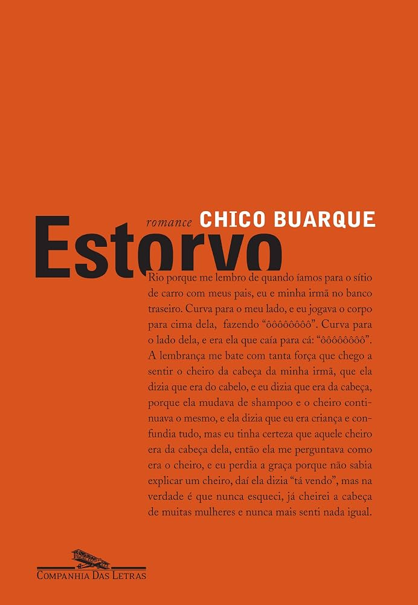

Estorvo
Chico Buarque
Descrição
"Estorvo", romance de estreia de Chico Buarque publicado em 1991, narra em primeira pessoa a história de um protagonista sem nome que perambula por uma grande cidade brasileira em meio a uma atmosfera de paranoia, sonho e incertezas.
A narrativa ágil e claustrofóbica acompanha os encontros desencontrados, a sensação constante de ameaça e a fuga incessante do narrador de seus próprios fantasmas cotidianos.